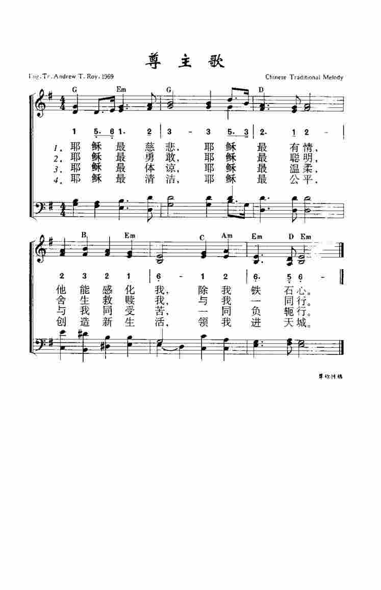
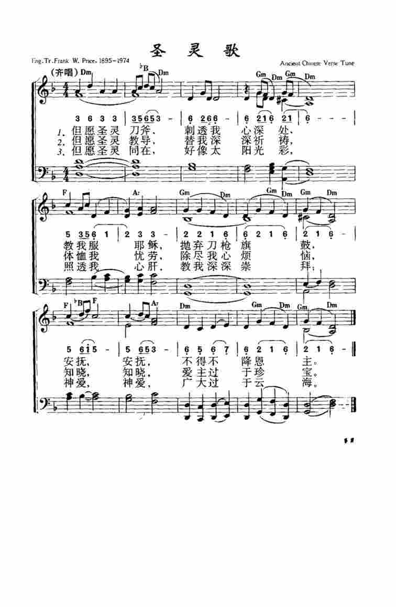
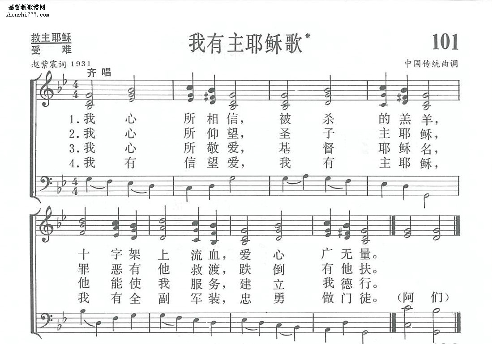
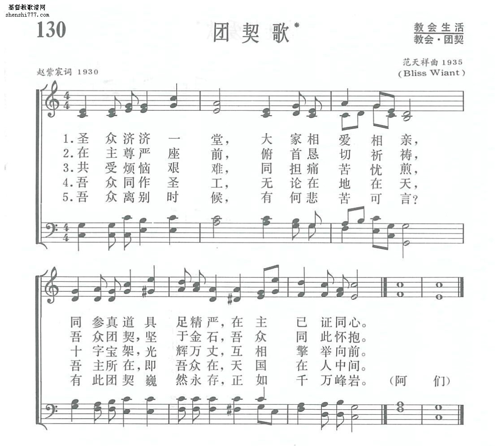
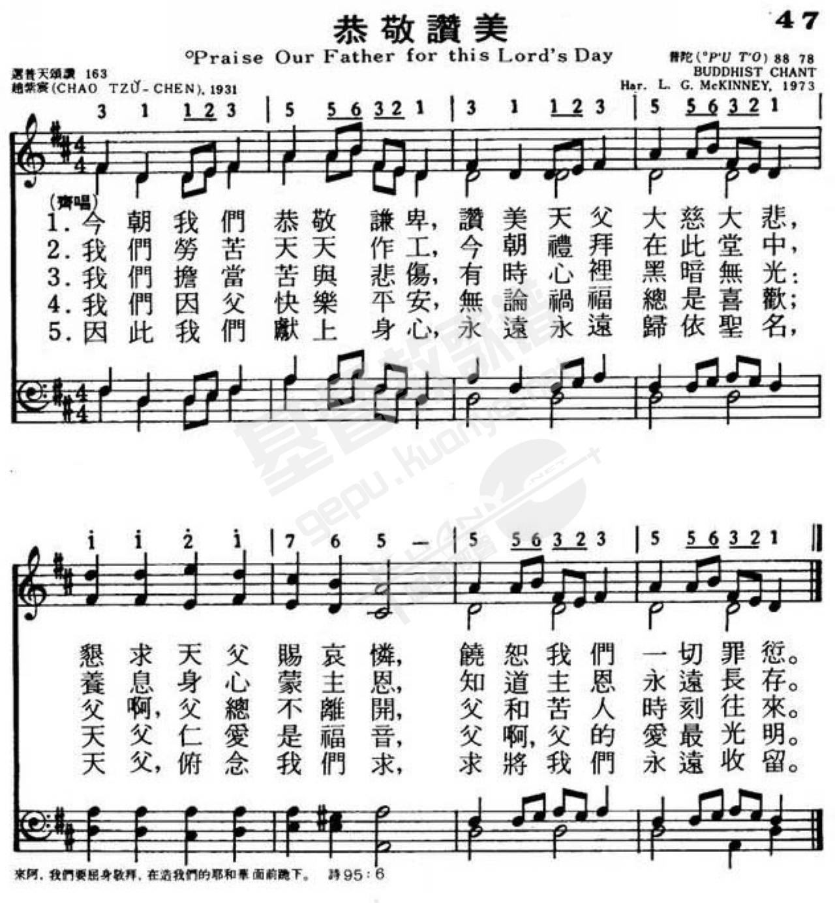
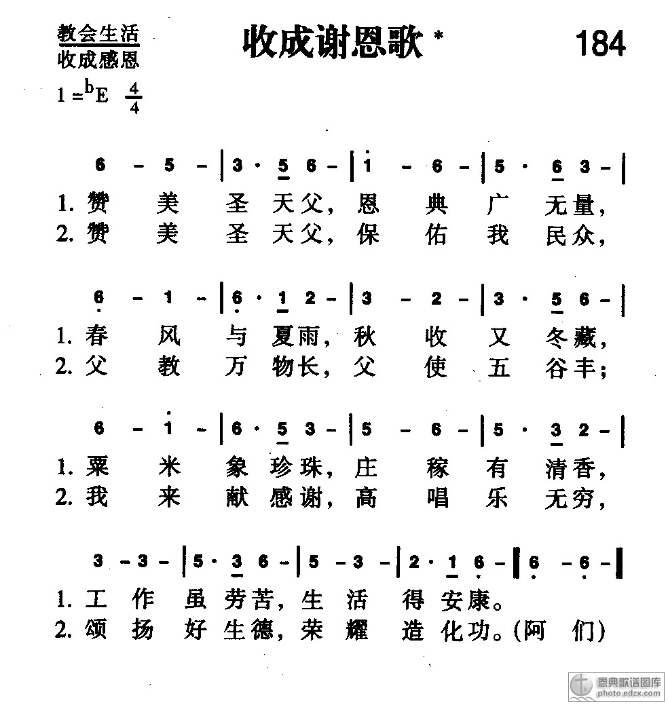
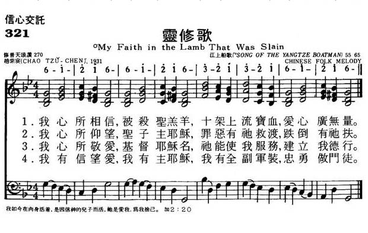
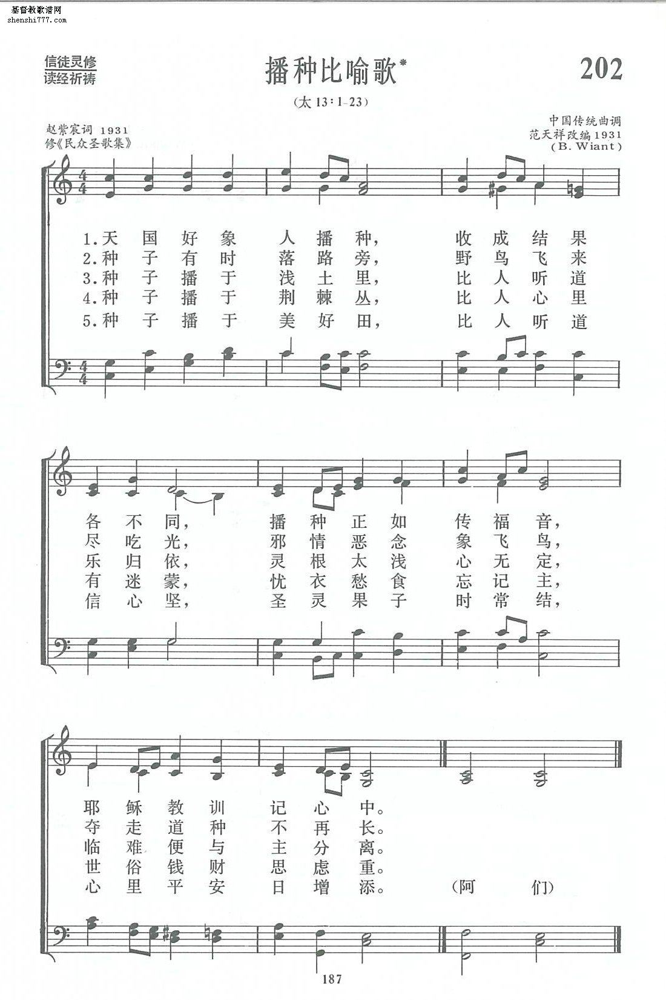

1999
New every morning is the love 第148首
清晨歌* _赵紫宸
[華]
1422 GP010 清晨歌 _趙紫宸 Morning Hymn
| 簡介
Golden Breaks
the Dawn |
| In ways reminiscent of the imagery of
Lamentations 3:22–23, this popular Chinese text skillfully layers short
phrases to create a picture of the dawning day as a context for affirming
God’s mercies and for seeking God’s protection and provision. The t |
赵紫宸詞 聖詩
|
Golden breaks the dawn
Author: Zhao Zichen
Tune: LE P'ING |
【清晨歌】
詩集：普天頌讚，472 |
|
1 Golden breaks the dawn,
comes the eastern sun;
like a rider strong,
set the course to run.
Birds above me fly,
flowers bloom below;
through the earth and sky
God's great mercies flow.
2 Holy, living God,
keep me safe today;
though I weary plod,
make me kind, I pray.
Let me guide our youth,
honor weak and old;
let me serve with truth,
and God's love unfold.
3 Give me daily bread,
while I do my part;
]bright skies overhead,
gladness in my heart.
Simple wants provide,
evil let me shun;
Jesus at my side,
till the day is done. |
清早起來看，紅日出東方，雄壯像勇士，美好像新郎；
天高飛鳥過，地闊野花香；照我勤工作，天父有恩光。
懇求聖天父，將我妥保存，行為能良善，顏色會和溫，
虛心教小輩，克己敬年尊，常常勤服務，表明天父恩。
但願今天好，時刻靠耶穌，頭上青天在，心中惡念無，
樂得布衣暖，不嫌麥飯粗，千千萬萬事，樣樣主幫扶。阿們。
|
|

https://www.zanmeishige.com/tab/25319.html?songbook=1&index=10
|
|
|
|
 媒體
媒體
1628 清晨歌 Golden Breaks the Dawn
http://www.hymncompanions.org/Mar/02/stream.php
清晨歌 Golden Breaks the Dawn
清早起來看，紅日出東方，雄壯像勇士，美好像新郎；
天高飛鳥過，地闊野花香；照我勤工作，天父有恩光。
懇求聖天父，將我妥保存，行為能良善，容顏會和溫，
虛心教小輩，克己敬年尊，常常勤服務，表明天父恩。
但願今天好，時刻靠耶穌，頭上青天在，心中惡念無，
樂得布衣暖，不嫌麥飯粗，千千萬萬事，樣樣主幫扶。
 (請點耳機收聽)
(請點耳機收聽)
古人云：「一日之計在於晨」。 我們該在清晨先與神相見，把這一日交在祂的手中，然後再與人和世界接觸。
「清晨歌」是中國著名的神學家及詩人趙紫宸（Chao Tsu-chen,
1888-1979）所作，由燕京大學音樂系學生胡德愛（Hu Te-Ngai）譜曲，1931年刊印在他的「民眾聖歌集」中。
1936年由范天祥配上和聲，編印在「普天頌讚」中。
1946年范天祥夫人將它譯成英文，發表在一本介紹中國聖詩創作小冊中，引起廣泛的注意。 1964年，被選入美國衛理公會新編的聖詩集中，它是美國聖詩集中，第一首被選的中國人創作的聖詩。
趙紫宸出生在浙江省新市鎮的一個小商人家，1907年受洗加入監理會，東吳大學畢業後赴美留學，1917年獲神學士學位。
歸國後先在東吳大學教授社會學，1925-1951年間任燕京大學宗教學院院長，兼燕大校牧。
1941年他轉入聖公會，任中國華北教區會長，同年日本發動太平洋戰爭時，他被日軍逮捕。 出獄後他從事寫作及向少數神學生授課。
趙紫宸對西方哲學，中國古典文學、詩詞及戲劇，都有很深的造詣。 他曾講授過中國哲學和陶淵明、杜甫詩集的研究，重點講詩中的宗教思想。
他曾三次參加中國基督徒代表團出席國際基督教宣教會議。 1947年，美國普林士頓大學慶祝建校二百周年時，特授他榮譽博士學位。
趙紫宸一貫主張中國教會應由中國信徒自己主持，勿全依賴西方的思想，中國教會應該自養、自傳、自立、自理。
他的著作有「基督教哲學」，「耶穌傳」，「民眾聖歌集」，「基督教進解」等；他的英文論著被登在的「中國基督教年鑒」，「國際宣教雜誌」等書刊。他作詩歌有數原則：
一. 聖詩必須是具體的，使會眾唱時能心口合一。
二. 要簡潔明瞭，淺白易懂，老少咸宜，雅俗共賞。
三. 要含有中國民族性，與中國人的日常生活環境打成一片。
四. 要基于聖經，使歌者同時學習聖經。
五. 要能表達真誠的宗教經驗，並當讚美神。
六. 每一首詩應該是一篇講章，領詩的人必須先使會眾了解詩的含意。
中英文聖詩集參考
英文歌名 Golden
Breaks the Dawn
頌主新歌 28
頌主新歌(中英雙語) 29
生命聖詩 493
讚美 470
頌主聖詩 228
讚美詩(新編) 148
校園詩歌I 152
https://vinemedia.org/bible-spirituality/hymn/hymn-1-31/
https://fangtsao.blogspot.com/2020/03/blog-post_18.html


https://zh.wikipedia.org/wiki/%E8%B5%B5%E7%B4%AB%E5%AE%B8
維基百科，自由的百科全書
跳至導覽跳至搜尋
|
趙紫宸 |
|
|
|
性別 |
男 |
|
出生 |
1888年2月14日
.svg/22px-Flag_of_China_(1862â�?1889).svg.png) 大清浙江省德清縣 大清浙江省德清縣 |
|
逝世 |
1979年11月22日
 中國北京 中國北京 |
|
教育程度 |
|
|
信仰 |
基督教 |
|
配偶 |
童定珍 |
|
兒女 |
趙蘿蕤、趙景心、趙景德、趙景倫 |
趙紫宸（1888年2月14日－1979年11月21日），男，浙江德清人，中國基督教新教神學家、教育家，歷任東吳大學文學院院長、燕京大學宗教學院院長，又曾擔任1948年8月普世基督教協進會成立大會的6位主席之一[1]。翻譯家趙蘿蕤的父親。
1888年2月14日（清光緒十四年正月初三日），趙紫宸出生在浙江省德清縣的一個小商人家，父親趙炳生。13歲（1901年）時，因家道中落，曾輟學預備隨父從商。15歲（1903年）再入學，入讀蘇州的教會學校萃英書院，接受西式教育。之後轉入東吳大學附屬中學，並考入監理會辦的東吳大學。1907年，他受世界基督教學生同盟總幹事約翰•穆德（John
R. Mott）及東吳大學校長孫樂文（D. L. Anderson）影響，受洗成為基督徒。1910年，東吳大學畢業，趙氏留校在東吳中學任教。[2][3]
1914年，趙紫宸代表在華的監理會前往美國奧克拉荷馬州參加美南監理會總會會議。同年秋，他進入監理會背景的田納西州范德堡大學的大學宗教學院，主修社會學及哲學，1916年獲社會學碩士學位，1917年獲神道學學士學位，並獲頒授「創辦人獎章」。1917年，學成回國，在東吳大學任教授。1922年升任教務長，並兼任文學院院長。同年出席清華大學舉行的「第11屆世界基督教學生同盟」、上海的「基督教全國大會」及在牯嶺舉行的「全國立志布道團第一次全國大會」。[2][4]
1926年，趙紫宸應燕京大學校長司徒雷登之邀，由東吳大學轉職燕京大學，擔任宗教學院教授，兼任中文系教授。根據1936年出版的《中華民國二十五年度．私立東吳大學文理學院一覽》記載，他在1926年於東吳大學25周年紀念典禮上，獲母校授予「榮譽博士」銜。1928年，升任職燕京大學宗教學院院長，直至1952年大學結束，共26年。1941年7月，趙紫宸在香港被聖公會何明華會督按立為聖公會會長（牧師），他正式由監理會轉入中華聖公會，華北教區主教聘他為華北教區任會長。同年12月8日，珍珠港事件發生數小時後，日本憲兵隊包圍燕京大學，趙紫宸等11位教授被捕，趙氏被日軍囚禁至1942年6月18日始獲釋。[5]
抗戰勝利後，他恢復燕京大學宗教學院院長的職務，兼任中國文學教授。1947年，趙紫宸獲美國普林斯頓大學頒授榮譽神學博士學位。1949年9月，趙氏成為中國基督教界五位代表之一，參加了中國人民政治協商會議第一屆全國委員會會議。之後他成為基督教三自愛國運動發起人之一，1954年當選為中國基督教三自愛國運動委員會常務委員。但自1951年開始的「三反五反運動」，以及1966年至1976年的「文化大革命」中，他遭受殘酷迫害。1979年11月21日在北京病逝，享年91歲。[4]
1905年，17歲的趙紫宸奉父母之命，與19歲的童定珍結婚，童氏為小商人之女，未曾接受教育。二人育有三子一女：女兒趙蘿蕤、長子趙景心、次子趙景德、三子趙景倫。
- 燕京研究院編：《趙紫宸文集（卷一）》。商務印書館，2003。ISBN
9787100036962。
- 燕京研究院編：《趙紫宸文集（卷二）》。商務印書館，2004。ISBN
9787100039857。
-
趙紫宸 :《基督教進解》. 香港 : 基督教輔僑出版社, 1947. 基督教文藝出版社藏書, 香港浸會大學圖書館.
華人基督宗教文獻保存計劃.
-
趙紫宸 :《神學四講》. 香港 : 基督教輔僑出版社, 1955. 基督教文藝出版社藏書, 香港浸會大學圖書館.
華人基督宗教文獻保存計劃.
-
趙紫宸 :《聖保羅傳》. 香港 : 基督教輔僑出版社, 1956. 基督教文藝出版社藏書, 香港浸會大學圖書館.
華人基督宗教文獻保存計劃.
-
趙紫宸 :《耶穌傳》. 香港 : 基督教輔僑出版社, 1965. 基督教文藝出版社藏書, 香港浸會大學圖書館.
華人基督宗教文獻保存計劃.
-
趙紫宸 , 范天祥:《民眾聖歌集》. 上海 : 廣學會. 基督教文藝出版社藏書, 香港浸會大學圖書館. 華人基督宗教文獻保存計劃.
參考文獻[編輯]
http://production.lifejiezou.com/node.php?nid=16222
【原创】从小道士、反教先锋，到华人神学家，他如何寻得真理与自由
作者：孙耶西

1949年9月21日，赵紫宸作为中国基督教界五位代表之一，出席中国人民政治协商会议第一届全体会议，后当选为北京市政协常委。
从“吴耀宗、丁光训一道的自由派”到“华人界第一神学家”，现今中国教会对赵紫宸的印象是复杂的。作为学院派神学家的赵紫宸，著作等身，声名远播；而他作为一个基督徒的信仰历程，更是横跨了从前清到文革结束近一个世纪的时间。这篇文章所关注的是赵紫宸早年的信主经历。藉由他自己的追述，邀请诸位观看、反思，看赵紫宸的属灵经历是如何与他的个人状况乃至历史潮流相互交织影响。
诚然，关于赵紫宸的信仰也有颇多争议，暂不在本文讨论范围之内。
恐惧与修行
1888年，也就是清光绪14年，赵紫宸生于浙江德清的一个商人家庭。小赵自小身体羸弱，动辄生病。不过在前清的传统社会，小赵首先了解的却不是针管和苦药，而是求仙拜佛、投文许愿、烧纸钱喝符水之类的“鬼神之道”。
在我们现代人看来，这不过是封建迷信蒙骗无知小儿。诚然。但与此同时我们也很难想象一个信仰与生活紧密连接的世界是怎样的。对小赵来说，灵界与现世的隔膜，实在很薄。这给体弱心细的小赵带来了不小的麻烦。
首先便是恐惧。七岁那年，小赵的婶母去世，家里请和尚来做法事。也不知是什么路数，和尚们不仅要挂佛像，还要挂十殿阎罗。好奇的小赵跑去一一仔细瞧过，就觉得满屋子都是鬼了。从此以后，只要窗外有个风吹草动鸡鸣犬吠，必定惊得小赵寒毛直竖。
奈何当时民间的娱乐劝化，都讲究吓人。一个仲夏夜，小赵跑去家门口看热闹，只见一个顶碗滚灯的杂耍艺人表演正酣，谁知脸却涂得像凶鬼一样狰狞不堪，吓得小赵“几欲骇死”。佛诞日，老爸带着小赵看戏文，谁知人挤人就把小赵挤进了满是牛头马面的十王殿，可怜的小赵只好全程闭眼随缘。待到楼上看戏，却不想又是演阴阳河。这可真是欲哭无泪。若不是在场人多，只怕后来的赵神学家就要交代在这了。从此，每逢过庙，必要问老爸里面的菩萨吓不吓人。
有趣的是，民间宗教对赵紫宸而言不仅是恐惧的神秘来源或者消灾解惑的交换手段。他从中体味出的伦理和修行的态度，对赵紫宸的属灵旅程有持续的影响。一次镇上赛神演戏，其中观世音点化圣帝的那一句“若要功夫深，铁杵磨作绣花针”被小赵牢牢记住，从此开始他不懈的修行。人说黄鳝是大荤，牛肉是祭圣人的，小赵便一一拒绝。即便家里人都吃荤，小赵也毫不艳羡。以致于小赵看着吃斋拜佛终身不娶的就觉得是好人，家里给他说亲他却觉得不是正路。小赵还客串过小道士，身穿锦绣道袍，口唱道士小调，手舞足蹈，“心中觉得异常快愉”，看见的人都说有意思。那时的小赵，到点就起来念皇经，也不偷荤吃素，毫不想着为自己积功德修来世，只是沉浸其中。
归向基督
使赵小道士成为神学家赵紫宸的契机看似毫不相关——唱赞美诗和变法图强。赵家左近就有一个耶稣堂，会友们唱诗的“嘈杂”声音时常穿墙入耳。祖母在拜神的事上是变通的，并不介意带小赵去看看礼拜。于是便认识了一位基督徒，首次听闻“变法”与“洋文”。时年1903，老大帝国在经历庚子拳乱之后，终于不再摇摆，上下舆论趋于统一，务要变法改制以图强。但千年的科举惯性难以消除。虽然这位基督徒推荐小赵去苏州长老会所办萃英书院读书，小赵本人却举棋不定。是去杭州读中国书走科举正途呢，还是跟着“吃洋饭的人”，冒着入“邪教”的风险去苏州读外国书？
怎么办？问问菩萨吧。小赵去觉海寺灵泉山求了两签，言去杭州是上吉，苏州是中平。按理说故事到这里就结束了，但小赵却发了狠，觉得菩萨不该跟自己正当的心愿有什么冲突——读洋文求变法有什么错？由此一役，赵紫宸与民间宗教便渐行渐远。
苏州的萃英书院是赵紫宸真正开始了解基督教的地方。书院要求严格，主日除了礼拜什么也不许做；平日圣经课上马可约翰福音也要熟读背诵，不许差了一字；天堂地狱、灵魂得救、耶稣宝血等等无一不说得小赵心热如火，以致回家见了门上贴的神符菩萨伸手就撕。
但赵紫宸的信仰之路却绝非一帆风顺。首先小赵的道士师傅就看不过他的叛教行为，竭力挽回。小赵耐不过，在读洋书信道理之后又回去客串了一把道士。之后进了东吴大学预科，又化身非宗教运动的急先锋，觉得“中国自有文明，西洋宗教，既为迷信，更非所需，岂容染我中华干净土”。校长让学生开演说会，小赵写了一篇英文讲稿，背熟了，当着全校的面说：“等我们力足的时候，定当把洋人一齐杀了。”
这位监理会宣教士David L.
Anderson，中文名叫孙乐文的校长，总算没有被小赵的阵势唬住。之后一次晚祷结束，孙校长独留赵紫宸一人在书斋中，恳切地说：“紫宸，我看你乃一深思的青年，你当自思。”于是小赵回屋之后细细琢磨，“我是一个深思的青年，孙先生知我也。士为知者死可矣。”从此读经祈祷，领洗入教。
这听起来颇具戏剧性，但不可否认的是那几年恰是赵紫宸生命中痛苦的时候。他自己说，“倘非痛苦相煎我绝不会做基督徒。”一是当时赵家已败，债台高筑，时常需要典当东西糊口，饱受世态炎凉。小赵即便半工半读依然入不敷出，衣着落魄，骨瘦如柴。幸得母校借银380元，之后看他任事勤勉，这钱也不要他还了。
另一痛苦则是婚姻问题。小赵17岁时奉父母之命与长自己两年又没有受过教育的童定珍成婚。婚后两人在文化上显出极大差距。依小赵自己说，是“平常而真切的痛苦。”想来已受西方影响的赵紫宸对此婚事并不认同，但出于孝顺父母，勉强接受罢了。
在这段痛苦经历当中，赵紫宸在寻找的，是关爱与引导，是知己。幸而在众多赏识他关心他的人当中，孙校长起了最大的作用。换言之，小赵从小道士，到反教先锋，再到基督徒，其中最大的关键在于心灵上的安慰依托，理性上的思考寥寥无几。这也成了赵紫宸日后信仰之路上最大的试炼。
赵紫宸.jpg
赵紫宸在家接待学生
从清教徒到解放者
刚信主的赵紫宸极为火热。在他留校任教时，每天六点起来在教室独自祷告，用三小时读圣经写笔记，见人就传福音。又每晚在他自己的职员宿舍里领祷告会。起初只赵一人，后不到半年时间就人满为患，有17位学生受洗，约是当时大学生的四分之一。
赵紫宸形容自己初信时是一个清教徒。有人说基督徒要全心依靠上帝，有病不需吃药，小赵就立刻不要医药；人说基督徒不应当和不信的吃饭——巴力和基督有什么相关呢——他就立刻不去吃饭；人说耶稣某年某日就要来了，他就思想等候；想到自己徒然在发式上追求美观，就立刻要去找剃头匠剃刮干净。最难的是重生——人说凡重生者必要痛哭流涕，在神面前认清自己大罪。小赵心里苦啊，眼泪下不来啊，这样就不算一个重生的人吗？
此时的又一大争战是在家里。初信主的小赵面对晚饭十分为难，若是闭眼谢饭，就瞬时漏了马脚，让母亲知道自己是“吃教”了。父母先是问，问完了就责怪，怪完了就劝阻，劝不听…那就只好动手了。此后家中再无宁日。每次吃饭、祭祖、拜佛，都是小赵遭难的时候；家里一切不顺，从经济困难到婆媳不和，都被归在赵的头上。
说也奇怪，在小赵遭责打时，心里却快乐起来，觉得自己像大祭司面前的彼得约翰，是有价值的。之后更鼓起勇气祷告预备，母亲骂一句他就讲一句圣经，从原罪到道成肉身，听得母亲又笑又骂。如此拉锯一年多，直到一日母亲拜神，小赵又趁机宣教。见母亲莞尔，小赵意识到机会来了，就一面说“母亲你可算信了我了”一面一鼓作气上蹿下跳。一时间，赵家的神佛符纸、灶君纸马、死者纸座、厅堂神龛，尽数遭了秧，在小赵手下化为馒头状。又即刻请附近耶稣堂的张牧师，将这些东西一把火烧了。小赵趁热打铁，问今晚是否就能请基督徒到家里做礼拜。母亲思前想后，觉得既然这些鬼神赵家已是得罪了，若不请正直之神来护卫，家里遭了难可怎么办？于是便允许了。之后便是康庄大道。赵紫宸教父母妻子读经祷告，带领家人受洗信主。
但福音上的热心和在教会内的诸多服侍并没有让赵紫宸免于下一个试炼，就是经验与理解的平衡。目前为止，赵的信仰可以算作是一种道德理想主义：靠着耶稣的能力，胜过自身的试探，拓展与神与人的关系，主要是通过经验来体会神的同在。但他渐渐发现他的经验开始与理解脱节，以致于他一旦拷问起宝血、替代、原罪之类的教义，就疑窦丛生，觉得自己的信仰全是破绽。
有一天，他在书店中看见《中庸》的这句话：“唯天下至诚为能尽其性”，自认得了顿悟，觉得基督教就是人我与神心心相通，而耶稣就是这一相通的表现。这与赵之前重视良朋、师长、知己一脉相承，觉得终极的目标和价值来自于完全的心交。
这种用心性和人格来解释基督教的倾向一发不可收拾，成为赵紫宸1940前的神学主流。1914-1917年赵紫宸去美国Vanderbilt大学宗教学院深造，除了尽展学霸本色，也经历了彻底的现代主义洗礼，标榜科学主义与反传统反建制，与之后的新文化运动甚为相配。在这个背景下，祷告、神迹、天堂地狱等信仰教义对赵来说已是不可想象之事。正统教义，因为其既不能被科学论证又压制思想自由，几乎被赵视为“异端”。而教会内的伪善者和两胞弟的早逝则使赵的宗教反弹再也无法抑制——直到近二十年后他经历属灵的干涸、神学的反思，和在日本人监狱中度过的六个月。
简单注释：本文主要出自赵紫宸在1923和1934年出版的自述文章，题为《我的宗教经验》。恕文中未一一注明出处。
作者简介：孙耶西，基督徒。生在古都，长在帝都。受洗于北京守望教会，受教于美国加尔文大学。在获得东亚研究和神学研究的硕士后，蒙召进入博士学习，主修教会历史，尤重中国教会史。

赵萝蕤、赵景心：我们的父亲赵紫宸
赵紫宸詞；胡德愛曲
经文：“太阳如同新郎出洞房，又如勇士欢然奔路”
(诗
19：5)
《清晨歌》是赵紫宸所写的流传最广的一首圣诗，由前燕京大学音乐系学生胡德爱写曲。最初发表于 1931年出版的赵著《民众圣歌集》第一首，以后由范天祥配和声，收入
1936年出版的《普天颂赞》第425首。1946年范天祥夫人将其译为英文，英译首句为Rise
to greet the Sun，在介绍中国创作圣诗和民歌曲调的一本小册子一《塔》内发表，引起广泛的注意。1964年被选入美国卫理公会新编赞美诗第678首，是为美国赞美诗选录的第一首中国人创作的圣诗。
1989年5月28
日编者应邀参加美国圣安东尼奥城中央基督徒礼拜堂礼拜，发现该会所用的《基督徒崇拜圣诗》內的第27首便是这首《清晨歌》。编者在致词时说明了这一情况。该堂牧师特将该赞美诗出版的《诗伴》见赠，该书在介绍这首诗时说：
“这首诗是l936年中国教会合编的《普天颂赞》中六十二首中国人创作的圣诗之一。毕范宇将其中的第23首译为英文，在
1953年《中国信徒创作圣诗及其中国曲调》一书中出版发行。选入本集时略去原诗的第二节。”
可见该集所选用的是第二次英译，首句为Golden
Breaks the dawn，以后这一英译被收编到
1987年第一版《普天颂赞》英文本中第472首。
编者离美前，接到该堂主任牧师麦京来信说：“在你离我堂后的第一个主日，我堂唱诗班练习献唱了这首诗；第二个主日，全体会众同唱这首诗。今后还将经常唱颂。”
许多到美国访问的中国基督徒，在美国卫理公会教堂中作礼拜时，美国卫理公会常唱这首诗，以表欢迎。
http://hymn.pct.org.tw/Hymn.aspx?PID=P2011111000023
https://www.jgospel.net/default.aspx?languageid=2&contentid=112934&contenttypeid=279&tabid=3986&112934
調名「樂平」的旋律是以五聲音階為主（do
re mi sol la，即宮商角徵羽），
只
在第三譜表突然出現 fa（清角）音一次，全曲樂句的進行趨向以
sol（徵）為終
止音，所以很明顯的是屬於中國的「徵調」，
可用二胡、笛子伴奏，無須和聲或
簡化和聲以呈顯中國風格。（LIT）
赵紫宸
(Chao) 浙江德清县人
https://hymnary.org/person/Zhao_Zichen
https://www.chiculture.net/30022/c39.html
https://zh.wikipedia.org/wiki/%E8%B5%B5%E7%B4%AB%E5%AE%B8
赵紫宸三字按罗马拼音作Chao Tsu — chen，所以在国外以T.C.Chao闻名。1888年他出生于浙江省德清县新市镇的一个小商人家，1979年在北京逝世。1907年他受洗加入基督教监理会，在苏州东吴大学毕业后赴美留学，1916年在梵德比尔大学得硕士学位，19l7年得神学学士学位，返国后在东吴大学教授社会学，1925—
1951年间，他任燕京大学宗教学院院长兼燕大校牧，辅助燕大的宗教活动。在此期间，他曾到国内外教会访问、布道，参加各种会议。他曾三次参加中国基督教代表团出席
(1929年于耶路撒冷、1938年于
印度马都拉斯、1947年于加拿大惠特比)国际基督教宣教会议。1939一l940年应港粤教区何明华主教之请，携眷去昆明。在该地圣公会文林堂传道一年；
1941年7月在同一个礼拜程序中，由何明华先后三次按手，为他举行了坚振礼①，派立他为会吏，按立他为会长，使他由监理会转入中华圣公会；华北教区主教聘他在华北教区任会长
(牧师)。当年12月8
日，日本发动太平洋战争，赵紫宸被日本宪兵队逮捕。在狱中他想起这件事，更深切体会到“冥冥之中有一个永远的指导”
赵紫宸从日本宪兵队的牢房出来后，住在北京宣內沟沿基督教圣公会院内，有更多的时间从事写作，并向少数神学生讲授神学与保罗传。抗战胜利后，燕京大学复校，他也恢复了原来该校宗教学院院长的职务，兼任燕京大学的中国文学教授，曾讲授过中国哲学和陶渊明、杜甫诗篇的研究，重点讲诗中的宗教思想。
1947年美国普林士顿大学纪念建校二百周年，特授赵氏荣誉神学博士学位；
1948年世界基督教会协进会在荷兰阿姆斯特丹举行第一次大会时，他当选为六位主席之一。l951年美国发动侵朝战争，该协进会的中央委员会发表文件，支持侵朝战争，他毅然辞去该协进会的六个主席之一的职务，以示抗议。
赵紫宸无论在文学修养和宗教思想上都有较深远的影响。他对西方哲学，中国古典文学一特别是诗词戏剧以至书法艺术，都有很高的造诣。他晚年对西方基督教神学尤其是尼勃尔的神学进行了认真的分析和中肯的批评。他在基督教方面的著作有：《基督教哲学》(1925年)、《耶稣传》(1926年)、《民众圣歌集》(1932年)、《基督教进解》(1948年)等；他的英文论著散见于《教务杂
(Chinese Recorder)》、《中国基督教年鉴》、《国际宣教杂志
(Interntional Review of missions)》等书刊。
解放战争时期，赵紫宸反对国民党政府迫害进步学生；北京解放前夕，他从国外返回迎接解放；之后，他与陆志韦校长、张东荪教授等人，为北平的和平解放奔走商谈，作出了贡献。解放后，他被邀请参加了中国人民政治协商会议第一届会议；后来多年担任中国人民政治协商会议北京市委员会委员、常委。
@
赵紫宸博士
赵紫宸博士在西方哲学和文学上都很有修养。诗词、戏剧、书法都有很高的造诣。他的诗词琅琅上口，用词通俗并富有诗意。他的代表作「天恩歌」和「清晨歌」富有田园风味。「清晨歌」已被选入多本英美圣诗集。《普天颂赞》采用了他的创作诗九首，翻译诗六首。赵紫宸在北平解放前夕从国外回到中国，解放后应邀参加中国人民政治协商会议，并历任协商会议北京市委员会的委员和常委。一九七九年于北京逝世。
@
赵紫宸对圣诗中国化的探索与贡献
http://blog.sina.com.cn/s/blog_a089949701010qnp.html
赵紫宸，1888年出生于浙江省德清县新市镇的一个小商人家[9]。1907年受洗加入教会。他于1910年毕业于东吴大学，1926年在燕京大学任教，1940年再回燕京宗教学院任教并担任该院院长。1947年7月，他被美国普林斯顿大学授予荣誉神学博士学位。赵紫宸是中国教会一位非常出色的神学家和圣诗人。
1925年应燕京大学校长司徒雷登的邀请，他接受该校神学科的教职。次年他被委以燕京大学基督教团契崇拜主任一职。应燕京大学基督教团契的需求，他开始将自己所翻译的圣歌用于团契的崇拜，据赵紫宸在《团契圣歌集》[10]序言中介绍，在燕大基督教团契试用油印本的时期，往往有同学们来索赠，又往往有契友来问圣歌集出版的日子。他不愿意在译诗未删之前，将油印本发散在外边，也不愿意固执地违拂学生索赠的善意。于是痛下决心，在寒假中每日自午后至午夜，摒弃职务，深自修养，洗盥焚香，努力翻译，两周内外，竟译成圣歌六十篇。译成后，每一首都由范天祥先生和同学郑少怀先生按谱弹唱，评评音节。然后，将不甚音律的地方一一修改过。在《团契圣歌集》中，赵紫宸作了四种创作的试验：第一种是古诗体，第二种是绝句体，第三种是文言白话合参，第四种是纯粹白话文。《团契圣歌集》于1931年出版，由北平燕京印刷厂承印。这本圣歌集当时被誉为“最认真、最负责、而文词又最美致”的赞美诗集[11]。该诗集收圣诗124首，均为历代教会名歌，121首为赵紫宸所译。1933年再版时又增译至155首[12]。
同一年，赵紫宸又和范天祥合作出版《民众圣歌集》这本圣歌集虽只收圣歌54首，但全系赵紫宸一人的创作。和《团契圣歌集》不一样的地方在于：“《民众圣歌集》是为民众——尤其是农村的民众——作的，文字应当极浅显，调子应当极普通。在这本诗集中，他还为自己创作诗词规定了十个原则。1、民众的圣歌必须是具体的。如《天恩歌》中“看田园里那百合花，也不种，也不收，也不会纺纱，天父尚且养活它，何况咱？”就是一首很具体的诗歌。2、民歌要简单浅白才好。3、但我们不必完全迁就民众，有时候，倒也要想法子提高民众的思想与观感。如《圣灵歌》的歌词“但愿圣灵同在，好像太阳光彩，照透我心肝，教我深深崇拜，神爱神爱广大过于洋海。”这首歌调用“如梦令”。4、民众的歌，应当含带中国民族性中最好最重要的成分。如《清晨歌》里的“天高飞鸟过，地阔野花香”等词句，使普通民众都能感受到诗歌的意境。5、民众有深恳的宗教经验，作歌的人，应当揣摩描拟，为之宣泄。如《晚祷歌》中有这样的诗句：“有时要心焦，有时要打算，心上愁云难打消，父知道，恩比愁云更加高。”6、民众的圣歌应当是赞美诗。7、民众的诗歌自应与民众的日常生活有密切的关系。8、民众诗歌，也应当帮助民众关心社会国家世界的生活。如《晚祷歌》的末节表达了这个意思：“人生多难多辛苦，求主可怜有病人，安慰孤与寡，救渡苦与贫，引导国家得和平，更加恩，教我们做好国民。”9、民众诗歌，应当根基于《圣经》，尤其是圣经故事。如《浪子回头歌》、《撒种歌》、《十童女歌》、《葡萄园歌》等都是属于这一类诗歌。10、每首歌，须是一篇说教的讲章[13]。赵紫宸在80多年前为圣歌诗词创作所定下的原则，到今天仍然具有非常重要的指导价值。这本诗集所有的曲调由美国基督教音乐博士范天祥用中国的风格为其配上。
赵紫宸创作的圣歌不仅在中国各地教会受到了欢迎与传唱，而且在世界各地教会的一些圣诗集里也选用了他的作品。据龙维欣在《赵紫宸在中国圣诗上的贡献》[14]一文中介绍，赵紫宸创作的圣诗在内国外被收录进圣诗集的有：1936年版的《普天颂赞》选用了赵紫宸的10首圣诗。1977年香港出版的《普天颂赞》修正本仍保留其中的9首诗歌。1992年基督教协会出版的《赞美诗（新编）》选用了他9首诗歌。1976年香港浸信会的《颂主新歌》选用了赵紫宸的诗歌7首，香港宣道出版社的《生命圣诗》1986年版选用了赵紫宸的《清晨歌》。此外，日本教会通用的《赞美》（1917年出版）也选用了两首他的圣诗，亚洲基督教协会编印的赞美诗本C.C.Hymnal（1973年版）也选用了《清晨歌》和《圣灵歌》等4首赵紫宸的作品。美国《The
book of hymns》（1964、1966年版）选用了两首他的圣歌，南美浸信会的《Baptist
Hymnal》（1975年版）也选用了他的《灵修歌》。因着他对中国圣诗的贡献，他被称为“中国圣诗之父”[15]。
-
Deeply I believe God's own Lamb was slainTzu-chen Chao (Author)
-
2Father
God, hallowed be thy nameTzu-chen Chao (Author)
-
3Golden
breaks the dawn 472. 清晨歌 (Golden
Breaks The Dawn)Tzu-chen Chao (Author)
-
8Great
are your mercies, heavenly Father 620. 天恩歌 (Great
Are Thy Mercies, Heavenly Father)Tzu-chen Chao (Author)
-
6Greet
the rising sunZhao Zichen, 1888-1959 (Author)
-
2Holy
Father, thou, thee we worship nowTzu-ch'en Chao, 1888- (Author)
-
2Humbly,
simply, we come earlyTzu-chen Chao (Author)
-
2Jesus
loved each little child 551.
主愛小孩歌 (Jesus
Loved Each Little Child)Tzu-chen Chao (Author)
-
3Jesus
merciful, Jesus pitying 550.
尊主歌 (Jesus
Full Of Grace)T. C. Chao (Author)
-
5Jesus
merciful, Most friendly, most kindTzu-chen Chao (Author)
-
2Jesus,
Savior, loved each childTzu-chen Chao (Author)
-
2May
the Holy Spirit's sword 82.
聖靈歌Tzu-chen
Chao (Author)
-
5My
heart looks in faith to the Lamb divine 341.
靈修歌 (My
Heart Looks In Faith)T. C. Choa (Author)
-
6Ne'er
forget God's daily careTzu-chen Chao (Author)
-
2Praise
our Father for this Sunday 228.
恭敬讚美歌
(Praise Our Father For This Lord's Day)T. C. Chao (Author)
-
5Praise
our God aboveTzu-chen Chao (Author)
-
7Rise
to greet the sunTzu-ch'en, Chao (Author)
-
7Song
of God's merciesTzu-chen Chao (Author)
-
2The
Holy Spirit's swordTzu-chen Chao (Author)
-
2We
gather in thy house 413.
團契歌 (We Gather In Thy House)Tzu-chen Chao (Author)
赵紫宸詞；
https://hymnary.org/text/jesus_merciful_most_friendly_most_kind
Translator: Frank W. Price; Author:
Zhao Zichen (1931); Alterer:
T. K. Chiu (1976)
PDF Audio files: Recording

|
尊主歌 |
|
|
耶稣最慈悲
耶稣最有情
他能感化我
除我铁石心
耶稣最勇敢
耶稣最聪明
舍生救赎我
与我一同行
耶稣最体谅
耶稣最温柔
与我同受苦
一同背轭头
耶稣最清洁
耶稣最公平
赐我新生命
领我进天城
阿们 |
|
|
|
|
媒體
043尊主歌
Chinese Psalms Holy Bible
【
讚美365
】
第六十三期
尊主歌
赵紫宸詞；范天祥編曲
经文：“我心里柔和谦卑，你们当负我的轭，学我的样式
……”(太
11：29)。
《尊主歌》是选自赵紫宸博士(事略见第30首)所著的《民众圣歌集》第20首，所用的曲调是中国汉族民间曲调；经范天祥
(事略参阅第31首)配以和声。范氏在为赵紫宸的《民众圣歌》谱曲时阐明：“熟悉教会音乐史的人，总知道基督教历来有假借俗乐改作圣乐的习惯。惟其如此，故能引民众深入圣教的奥妙
……教会用了此种俗乐，此种俗乐遂一举而为高洁的音乐,流传得广褒而长久了。中国音乐素缺四声合奏，难避西方音乐的影响。我们的尝试，相信是势所必然的事情。
”
诗、曲都很短,每节只有四句。在乐曲的和声处理上，前两句是按大调处理，后两句则按小调处理，唱起来和声比较丰富
。
圣灵歌
May the Holy Spirit's sword 赵紫宸詞；
調名：如梦令
JU MENG LING 范天祥編
82.
https://hymnary.org/text/may_the_holy_spirits_sword
Author: Zhao ZichenTune: JU MENG LING Printable scores: PDF
Audio files: Recording 
|
【聖靈歌】
詩集：普天頌讚，82 |
|
|
但願聖靈刀斧，刺透我心深處，
教我靠耶穌，拋去刀槍旗鼓，
安撫，安撫，使我降服恩主。
但願聖靈教導，替我深深祈禱，
體恤我憂勞，除盡我心煩惱，
知曉，知曉，愛主過於珍寶。
但願聖靈同在，好像太陽光彩，
照透我心肝，教我深深崇拜；
神愛，神愛，廣大國於雲海。阿們！ |
|
|
|
|
媒體
圣灵歌-
新编赞美诗442首
059圣灵歌
Chinese Psalms Holy Bible
赵紫宸詞；“如梦令” 范天祥編
经文：“但保惠师，就是父因我的名所要差来的圣灵，他要将一切的事指教你们，并且要叫你们想起我对你们所说的一切话”(约14：26)
《圣灵歌》原见于赵紫宸(事略参阅第30首)所创作的《民众圣歌集》第
11首。据赵紫宸在该集序言里说：民歌要简单浅白，老少皆宜，雅俗共赏。但又不必完全迁就民众；有时候，也要想法提高民众的思想与观感。这首调是以
中国词牌一“如梦令”吟唱时所用的曲调，经范天祥
(事略参阅第31首)配和声而成。乐曲可以齐唱主调，以器乐、钢琴或风琴伴奏；或以女高音独唱，其他三部分声部闭嘴以“呣”音伴唱。曲调深沉，尤以末句，真有刺透心灵深处之感。
我有主耶稣歌 *
My heart looks in faith*
赵紫宸詞；
調名：江上船歌
“船夫号子”
范天祥編
第101

|
《我有主耶稣歌》 |
|
|
我心所相信
被杀的羔羊
十字架上流血
爱心广无量
我心所仰望
圣子主耶稣
罪恶有他救渡
跌倒有他扶
我心所敬爱
基督耶稣名
他能使我服务
建立我德行
我有信望爱
我有主耶稣
我有全副军装
忠勇做门徒
阿们 |
|
|
|
|
媒體
101
我有主耶稣歌
MY HEART LOCKS N FAITH
101我有主耶稣歌（简谱版）新编赞美诗400首+短歌42首
Chinese Psalms Holy Bible
赵元任《江上撑船歌》（1933）
赵紫宸詞；《江上船歌》 范天祥編
经文：“如今常存的有信，有望，有爱
…… ” (林前13：13)。
这首诗最初载于赵紫宸牧师
(事略参阅第30首)所编的《民众圣歌集》第31首。原题为《灵修歌》，是他按我国江南《江上船歌》的曲调填的词。文字浅显，调子通俗，易学易唱，把基督教的信、望、爱三者具体结合到主耶稣的身上。最后一节总结为“我有信、望、爱；我有主耶稣。”《新编》根据这句话，将歌名改为《我有主耶稣》。
按我的传统曾有若干“船夫号子”。这首《江上船歌》是我国长江三峡中船夫拉纤时所唱的“纤歌”。它以通俗的旋律、清楚的节奏，反映出船夫在拉纤时边走边哼出的歌声，这是船夫在比较平稳的江面上紧张劳动的生活中却又表现出乐观自豪、坚毅勇敢的性格。经范天祥
(事略参阅第31首)用五线谱记录下来，并配上和声。低音部分似乎可以听出船夫用力向前走的沉重脚步声。范氏曾于1965年将这首创作圣诗译为英文，配上和声曲调，在美国出版。
調名：团契歌
范天祥曲
413.

|
|
|
|
团契歌》
圣众济济一堂
大家相爱相亲
同参真道具足精严
在主已证同心
在主尊严座前
俯首恳切祈祷
吾众团契
坚于金石
吾众同此怀抱
共受烦恼艰难
同担痛苦忧煎
十字宝架
光辉万丈
互相擎举向前
吾众同作圣工
无论在地在天
吾主所在
即吾众在
天国在人中间
吾众离别时候
有何悲苦可言
有此团契巍然永存
正如千万峰岩 |
|
|
|
|
媒體
130团契歌（简谱版）新编赞美诗400首+短歌42首
Chinese Psalms Holy Bible
经文：“凡事谦虚、温柔、忍耐，用爱心互相宽容，用和平彼此联络，竭力保守圣灵所赐合而为一的心”
(弗4：2—3)。
《团契歌》是从另一个角度来赞扬主内团契—
“同参真道”，“在主已证同心”，“有此团契巍然永存，正如千万峰岩”。是赵紫宸所作，原载《团契圣歌集》。
也是范天祥为其谱曲，调名《团契)。
当时，赵、范二人
(事略参阅第3O、31首)都在北京燕京大学任职，解放前燕京大学青年学生信徒和北京市教会中的信徒常借香山召开夏令会、秋令会，以研究基督教的道理，培养造就灵性。香山有座卧佛寺，大门口有一座砖石建成
的牌坊，正反两面刻有“同参密藏，俱足精严”。赵紫宸看到后，他想稍加修改就可以作为基督教信徒互相勉励之用。本诗的第一节就是这样形成的：
圣众济济一堂，大家相爱相亲，
同参真道具足精神，在主已证
同心。
恭敬赞美歌 Praise
our Father for this Sunday
赵紫宸詞；
https://hymnary.org/text/praise_our_father_for_this_sunday
ranslator: Frank W. Price; Author:
Zhao Zichen (1931)
Tune: P'U-T'O
PDF Audio files: Recording

|
【恭敬讚美】
詩集：頌主新歌，47 |
|
|
|
今朝我們恭敬謙卑，讚美天父大慈大悲，
懇求天父賜哀憐，饒恕我們一切罪愆。
我們勞苦天天作工，今朝禮拜在此堂中，
養息身心蒙主恩，知道主恩永遠長存。
我們擔當苦與悲傷，有時心裡黑暗無光：
父啊，父總不離開，父和苦人時刻往來。
我們因父快樂平安，無論禍福總是喜歡；
天父仁愛是福音，父啊，父的愛最光明。
因此我們獻上身心，永遠永遠歸依聖名，
天父，俯念我們求，求將我們永遠收留。
|
|
|
|
媒體
138恭敬赞美歌（简谱版）新编赞美诗400首+短歌42首
Chinese Psalms Holy Bible
ECCSKC Choir
恭敬讚美歌
经文：“来啊，我们要屈身敬拜，在造我们的耶和华面前跪下”(诗95：6)。
《恭敬赞美歌》是赵紫宸和范天祥二位博士合作而编成的(赵、范二人的事略参阅第3O、31首)，原载在《民众圣歌集》第28首。原题为《礼拜歌》，编入《普天颂赞》时改用今名，《新编》沿用之。
这首诗所用曲调起源于我国佛教胜地浙江普陀山上佛教庙宇中僧人诵经时所用的曲调，所以范天祥给它起各为《普陀 (Pu-to)》又称《佛教诵经曲》，经范天祥整理并配以和声。诗曲的韵律为8．8．7.8，是非常独特的。《新编》中只此一首，国外赞美诗中也不曾有过此种韵律。
欧美教会中的赞美诗集中采用这首的不少,1987年秋编者访问西德时，德国同道为我们从德国赞美诗中选出的三首诗中，便有一首是这个曲调，配以诗篇的词句，并注明为“中国古调”，可见该谱很早就在国外流行。

|
《收成谢恩歌》 |
聖詩(2009)
436 謳咾父上帝 |
|
赞美圣天父
恩典广无量
春风与夏雨
秋收又冬藏
粟米象珍珠
庄稼有清香
工作虽劳苦
生活得安康
赞美圣天父
保佑我民众
父教万物长
父使五谷丰
我来献感谢
高唱乐无穷
颂扬好生德
荣耀造化功
阿们 |
台語
1.
謳咾父上帝，
恩典對天降，
春風及夏雨，
秋割好過冬；
米粒若珍珠，
五穀有清芳，
工作雖辛苦，
生活得穩當。
2.
謳咾父上帝，
保祐作穡人，
互地出土產，
菜蔬會大欉；
阮欲來感謝，
天父大疼痛，
唱歌來謳咾，
奇妙創造工。 |
|
|
|
媒體
184收成谢恩歌（简谱版）新编赞美诗400首+短歌42首
Chinese Psalms Holy Bible
《大成乐章》《宣平》范天祥配和声
经文：“你浇透地的犁沟，润平犁脊，降甘霖使地软和；其中发长的，蒙你赐福”
(诗65：10)。
《收成感谢歌》的词作者是赵紫宸博士(事略参阅第3O首)。
曲谱来源是孔庙祭孔时的音乐《大成乐章》中的一段叫《宣平》，所以乐曲就命名为《宣平》，经范天祥配以和声。祭孔时不只有音乐而且还有舞蹈，乐曲中可听出舞蹈的节奏。天主教台湾籍名音乐家江文也先生也曾为这首乐曲配乐，并将和声改为管弦乐曲。
这首诗选自《普天颂赞》，据悉有的外国赞美诗也选用了它。
http://hymn.pct.org.tw/Hymn.aspx?PID=P2011111700005
詩歌賞析： 436
謳咾父上帝 華
語
：
讚
美
聖
天
父
這是一首讚美天父慈愛的聖詩，感謝春風夏雨、秋收冬藏，並求父保佑鄉農、
五穀豐登。
調名為「宣平」，乃中國傳統祭孔典禮的音樂，五聲音階la do re mi sol、
以兩個節奏型 | 6 -
5 - | 3. 5 6 - |
貫穿全首，莊嚴、一氣呵成。其和聲原為黃永熙 （1917-2003）所配，出版於1973
年的《普天頌讚》，但經1982
年亞裔美國人
《四風聖詩》（Hymns
from the Four Winds）的編者稍加修訂。
可用笛子或二
胡伴奏。
本詩適用於新年、感恩節、收穫節等。（LIK）
https://hymnary.org/text/my_heart_looks_in_faith_to_the_lamb_divi
Author: Zhao Zichen
調名：扬子江船夫曲,
"拉船号子"

媒體
PDF, Noteworthy
Composer
Audio
files: MIDI, Recording [Midi]
Matthew 16:13-20
;
Luke 9:18-27
; John
21:1-19; Romans
1:16-17; Romans
3:22-31; 1
Corinthians 13:1-13; 1
Peter 4:1-8
《灵修歌》的旋律原是一首扬子江船夫曲,或称"拉船号子"
,朴实单纯,很容易记住
播种比喻歌
赵紫宸詞
第202首

|
《播种比喻歌》 |
|
|
天国好像人播种
收成结果各不同
播种正如传福音
耶稣教训记心中
种子有时落路旁
野鸟飞来尽吃光
邪情恶念像飞鸟
夺走稻种不再长
种子播于浅土里
比人听道乐归依
灵根太浅心无定
临难便于主分离
种子播于荆棘丛
比人心里有迷蒙
忧衣愁食忘记主
世俗钱财思虑重
种子播于美好田
比人听道信心坚
圣灵果子时常结
心理平安日增添
阿们 |
|
|
|
|
媒體
第202首
-
播种比喻歌
下载歌曲
歌曲下载
赵紫宸詞；河北民歌，范天祥配和声
经文：“撒在好地上的，就是人听道明白了，后来结实，有一百倍的，有六十倍的，有三十倍的”
(太
13：23)。
这首《播种比喻歌》最初见于赵紫宸博士
(事略参阅第3O、31首)著的《民众圣歌集》第
15首。用赵氏自己的话来说：“民众诗歌应当根基于圣经，尤其是圣经故事。本集中，这一类的歌占一大部分。我们若能用圣歌使民众学习圣经，当然是一件好事情，例如《浪子回头歌》、《撒种歌》、《十童女歌》、《葡萄树歌》等都是属于这一类的”(
《民众圣歌集》赵序第6页)。原诗共八节，是根据马太福音第13章1至23节的顺序写的，全文如下：
1、天国如同一老农，出门播种在田中，
有时种子路边撒，野鸟飞来尽吃空。
2、有时播种在薄泥，青苗发得不为稀，
无奈因为根子浅，太阳一晒就萎靡。
3、有时播种荆棘中，荆棘长得一重重，
把苗挤住难生发，不能结实不成功。
4、有时播种在肥田，抽苗结实满田园，
辛苦虽流千点汗，百倍收成是好年。
5、耶稣教训意思深，播种好如传福音，
邪情恶念像飞鸟，吃尽道种害人心。
6、播种播于薄薄泥，比人听道乐归依，
灵根太浅心无定，临难便与主分离。
7、播种播于荆棘中，比人心里有迷蒙。
忧衣忧食忘恩主，可怜隔膜一重重。
8、播种播于美好田，比人听道信心坚，
圣灵果子常常结，心里平安日日添。
《新编》将其缩短改编为五节。所用曲谱是在河北省一带于解放前所流行的民歌，曾被配上多种歌词。 1931年范天祥
(事略参阅第30、31首)在赵紫宸配词的基础上，将此曲配以和声。
时常祈祷歌 第204首
赵紫宸詞；

|
《时常祈祷歌》 |
|
|
求主教我常祈祷
将心放在主面前
求主按照你应许
使我得蒙你爱怜
我今寻求主帮助
我今叩门求主开
我在主前不隐瞒
带着罪过向前来
慈悲救主认识我
要用宝血洗我心
使我心里全清洁
听见慈悲主声音
主的教训比蜜甜
主的诫命胜黄金
我愿万事听从主
欢喜与主永相亲
主啊求你帮助我
使我能够传福音
我要为你作见证
我要为你爱乡邻
我心我舌虽愚笨
主仍爱我不丢弃
求你使我言行好
随时随地传扬你
阿们 |
|
|
|
|
媒體
时常祈祷歌
赵紫宸詞；北方汉族民歌，范天祥配和声
经文：“靠着圣灵。随时多方祷告祈求
……” (弗6：l8)。
这首诗原载于赵紫宸博士《民众圣歌集》第3O首。他的诗具有简洁明了的特点。浅白易懂，老少咸宜，雅俗共赏。又是一篇很好的讲章。赵氏在序言里还说：“在唱诗之前，教士
(原文作“宣教师”，下同)可以将所要唱的一首逐句逐节讲一遍，一方面可以叫会众完全了解诗的意思，唱起来不至于隔膜；另一方面也可以使教士有宣讲的材料和机会
……教士先讲，会众然后唱，是一个最适宜的办法。”原诗共有四节，
《新编》省删的一节如下：
主啊
!惟你知道我，何等软弱何等穷，
惟有你能安慰我，解我忧愁一重重；
主啊
!你是最慈悲，你最谦卑最温柔，
我愿永远同你住，我愿为你背轭头 !
曲谱也是中国北方汉族民歌，1931年赵紫宸填完词后，范天祥教授
(赵、范事略参阅第30、31首)将此曲配上了和声。
https://www.hkhymnsoc.org/linfangzhonghuxiangbao-fantianxiangwenge/
謝林芳蘭：當傳統聖詩聖樂與中國聖詩聖樂互相擁抱時-
論范天祥與華文詩歌之本色化及探討《民眾聖歌集》的詩歌曲調
范天祥 (Bliss Mitchell Wiant, 1895-1975)
是第一位到中國傳福音的音樂宣教士。年輕時即熱愛中華文化，一心嚮往中國。1920年畢業於美國俄亥俄州的衛斯理大學 (Ohio Wesleyan
University)。1922年與同學美萃•阿爾芝 (Mildred Kathryn Artz, 1898-2001) 結婚。婚後，兩人接受美以美會
(Methodist Episcopal Church) 的差派，前往中國傳福音，為主作見證。
范氏夫婦於1923年抵達北平。不久，燕京大學的校長司徒雷登 (Leighton Stuart)
邀請他們在燕京大學開創音樂系，由范天祥擔任系主任，夫人教授聲樂[1]。到了燕京大學不久，一群愛好歌唱的學生，要求范天祥教他們唱一些動聽的西洋合唱曲。1927年秋季，學校公布成立合唱團，學生反應相當熱烈，有七十五人報名參加練唱。合唱團於1928年五月18日首次在北平的阿斯伯里衛理堂
(Asbury Methodist Church)
公演，演唱韓德爾的神劇《彌賽亞》(Messiah)。一個才成立不久的學生合唱團，能夠在短短的時間之內演唱四分之三的《彌賽亞》，實為中國音樂史上的創舉。從那年起到1950年間，合唱團每年在聖誕季節固定演唱《彌賽亞》，從此成為燕京大學的傳統。在他的日記裡，范天祥多次提到，當地的教會與音樂界人士，總是期待欣賞一年一度在北平舉行的《彌賽亞》演唱會。
范天祥除了擅長指揮合唱之外，也精通司琴。1925年三月國父孫中山逝世，治喪委員會邀請范天祥在喪禮彈奏風琴[2]，並且指揮詩班獻唱國父深愛的，由腓力•布利斯
(Philip Bliss) 所寫的詩歌〈生命之道極奇〉(“Wonderful Words of Life”)。
范氏夫婦在中國服事，前後長達二十多年。兩人不但全心投入音樂教學，更是積極地參與教會的服事，對提昇國人的西洋音樂教育水準，以及教會音樂素質有莫大的貢獻。
1951年范氏夫婦在不得已的情況之下離開中國。回到美國之後，范天祥繼續向人介紹中國音樂與樂器，並且將華文詩歌翻譯成英文。其中有幾首詩歌，包括〈清晨歌〉(”Rise
to Greet the Sun”)，被收集在美國《衛理公會聖詩》 (The United Methodist Hymnal)
與其他教派的詩本。後來，范氏夫婦有一段時間 (1963-1965年) 受邀到香港，任教於中文大學崇基學院，繼續教育華人音樂菁英[3]。
范氏夫婦晚年回到家鄉。范天祥於1975年逝世於美國俄亥俄州。家人遵照遺囑，將他們從中國帶回來的中國樂器、文墨，以及多年來收藏的藝術品，計有六百多件，於1978年捐贈給美國俄亥俄州立大學
(Ohio State University) [4]。
著作與音樂作品
范天祥一生積極在中國推廣西洋音樂教育。不過他對華人的教會音樂，特別在聖詩方面的貢獻，更是不可磨滅。其子范燕生 (Allen Artz Wiant)
提過，范天祥認為「他一生最有意義的成就，就是在推廣華文聖詩」[5]。我們可從他所寫的書籍與文章[6]，以及編輯的華文詩本──《團契聖歌集》、《民眾聖歌集》，與《普天頌讚》等，看出一絲端倪。
范天祥與當時燕京大學宗教學院的主任趙紫宸共同合作，從事編輯詩本。由趙紫宸翻譯與創作詩歌歌詞，范天祥譜曲。兩位於1931年先後出版了兩本詩本：《團契聖歌集》與《民眾聖歌集》。因篇幅有限，本文僅討論《民眾聖歌集》的詩歌曲調。有關范天祥參與《普天頌讚》的音樂編輯，請參看筆者所著《華夏頌揚：華文讚美詩之研究》
(香港：浸信會出版社，2011年)。
《團契聖歌集》
《團契聖歌集》特為燕京大學的基督徒團契編撰，共收集詩歌一百二十四首，啟應經文十八篇，以及祈禱文十二篇。
趙紫宸與范天祥選擇優秀的歐美聖詩，收集在《團契聖歌集》裡。兩位堅信美好的詩歌是普世基督教會共同的資產，華人基督徒也應該要認識與學習這些詩歌。詩本裡所有的詩歌歌詞，都是趙紫宸親手翻譯的。為了配合他的基督教本色化的理念，趙紫宸將中國的文化精髓引進詩歌，用以詮釋豐富的基督信仰，以及詩歌原作者的屬靈經歷。他以精湛的文筆，用典雅優美的古典風格翻譯歌詞，被稱為「華文聖詩之父」，可算是當之無愧。
為了編撰《團契聖歌集》，范天祥瀏覽《哈佛大學聖詩》(Harvard University
Hymnal)，以及數本衛理公會與聖公會的詩本。所選的詩歌種類相當均衡，計有天主教的聖歌、中世紀複音音樂的詩歌、巴哈改編的德文聖詠曲、英國聖詩、福音詩歌，以及聖誕節、感恩節、復活節等節慶的詩歌，聖餐禮拜的聖詩，與二十世紀的詩歌。詩歌涵蓋的年代也很廣泛，從早期教會的詩歌，到二十世紀初期英國作曲家佛漢威廉士
(Ralph Vaughan Williams) 所編寫的曲調SINE NOMINE等，都包括在內。
《民眾聖歌集》
《團契聖歌集》發行不久，趙紫宸與范天祥接著又編撰另ㄧ本詩本，稱為《民眾聖歌集》，於1931年由燕京大學出版。《團契聖歌集》主要的對象是燕京大學的教職員與學生；《民眾聖歌集》是為一般會眾而編集的。不過兩本詩本最大的區別乃在於《團契聖歌集》收集的都是歐美的詩歌與曲調；《民眾聖歌集》收集的則是新創作的詩歌，配上中國風格的曲調。
《民眾聖歌集》，這本華人聖詩史上劃時代的詩本，包括五十四首趙紫宸以白話文創作的詩歌。曲調由范天祥採集與改編自中國傳統的音樂，包括古詞調、傳統旋律、祭孔詩歌、佛教誦歌、中國民謠，以及模仿中國風格的新曲調等，多數配上四部和聲。其中有數首值得一提。
古詞調與傳統旋律
如夢令
詞牌〈如夢令〉(例1)
原是宋朝女詩人李清照的作品。范天祥將這首五聲音階的古詞調，配上四個聲部，改編成類似傳統的歐美聖詩。這首詩歌後來收集在1936年的《普天頌讚》裡
(第56首)，不過曲調改變成單旋律，配上簡潔的伴奏，以便保存古詞調原來的風格。
趙紫宸配合〈如夢令〉的詩歌結構與旋律，寫出一首祈求聖靈成為「刀斧」(第一節) 改變我們，教導我們 (第二節)，與我們同在 (第三節) 的詩歌──〈聖靈歌〉(第
11 首)。
例1. 《民眾聖歌集》，〈聖靈歌〉(第 11 首)，曲調「如夢令」，第1-5小節。
八段景
范天祥將中國傳統的旋律〈八段景〉(例2)
配上西洋的和聲，配搭趙紫宸所寫的詩歌〈晨更歌〉(第2首)。趙紫宸強調華人的聖詩，一定要反映出中華文化的特色。他認為華人的生活經常與大自然打成一片，因此可以從神所創造的大地與萬物，看見祂的偉大與榮美。例如這首詩歌的第一節，形容清晨的美景：「•••
東方太陽紅，頭上天色藍，柴門兩扇，綠水一灣，空氣清爽，我心喜歡，•••」。歌詞不但讚美清晨的美麗，也祈求耶穌讓信徒「••• 工作樣樣好，言語句句真，•••
與人往來，行為光明，•••」(第2節)。
例2. 《民眾聖歌集》，〈晨更歌〉(第2首)， 曲調「八段景」，第1-4小節。
祭孔詩歌
宣平
〈謝恩歌〉(第50首 )
的曲調「宣平」原來是一首祭孔的旋律。根據傳統的祭孔儀式，參與祭典的人一邊詠唱，一邊緩緩的隨著詩歌起舞。這首詩歌的旋律從頭到尾一氣呵成，搭配同一個節奏 (例3，
第1-2節)。全曲重複同樣的節奏，配合中國風格的歌詞，將莊嚴隆重的祭孔禮樂，轉為敬拜天父真神的詩歌。
這首詩歌後來收集在其他的詩本裡，包括《普天頌讚》與《讚美詩新編》(1983)
。《讚美詩新編》將曲調從原來的D小調降低為C小調，音域稍低，容易唱。有幾本英文的詩本也採用C小調的版本，例如美國聯合基督教會 (United Church of
Christ) 的詩本The New Century Hymnal (《新世紀詩本》)，以及美國長老會的詩本Hymns, Psalms, & Spiritual
Songs《頌詞詩章靈歌》等。
例3. 《民眾聖歌集》，〈謝恩歌〉 (第50首 ) ，曲調「宣平」， 第1-4小節。
佛教誦歌
普陀調
范天祥所收集的曲調當中有幾首為佛教的歌曲，〈禮拜歌〉(第28首)
的曲調就是其中一個例子。曲調採自佛教誦歌「普陀調」(例4)，調名來自於浙江省沿海的一個小島普陀，為中國著名的佛教聖地之一，據說島上廟宇的和尚以擅長誦經聞名。
例4. 《民眾聖歌集》，〈禮拜歌〉(第28首)，曲調「普陀調」，第1-4小節。
中國民謠
紫竹調
范天祥採用兒童歌曲「紫竹調」(例5) 作為趙紫宸所寫的〈晚禱歌〉(第3首)
的曲調。詩歌作者瞭解，也很貼切地表達信徒屬靈生活的經歷。第一節的歌詞生動地描繪現代人忙碌焦慮的生活情況：「人生忙碌不開交，一天到晚要操勞，有時要打算，有時要心焦，心上愁雲難打消，•••」；但是對信主的人而言，神的恩典夠用，因為「恩比愁雲更加高」。詩歌曲調「紫竹調」與歌詞相互輝映，讓神的兒女能從這首詩歌獲得安慰與鼓勵。
例5. 《民眾聖歌集》，〈晚禱歌〉(第3首)， 曲調「紫竹調」，第1-4小節。
孟姜女
〈聖父歌〉的曲調「孟姜女」(例6)
為中國的民謠，配合詩歌〈聖父歌〉(第4首)。趙紫宸再一次引用佛教的用詞。這首詩歌共有五節，每一節都以「大慈大悲聖天父」開始。第一節讚美天父的慈愛，第二與第三節感謝上帝差遣耶穌拯救世人，並且差派聖靈與我們同住，第四節讚美天父的公義與救恩。第五節，趙紫宸不忘將愛國的情操引進詩歌裡，懇求上帝幫助信徒熱愛國家，關心骨肉同胞。
這首詩歌後來收集在《讚美詩新編》，不過，編輯刪除了歌詞當中類似佛教的用詞，也修改曲調一開始的切分音，讓曲調順口、易唱。
例6.《民眾聖歌集》，〈聖父歌〉(第4首 ) ，曲調「孟姜女」，第1-4小節。
鋤頭歌
范天祥選用民謠曲調〈鋤頭歌〉(例7)
配搭趙紫宸的歌詞〈三一歌〉(第5首與〈天恩歌〉(第6首)。〈天恩歌〉的歌詞是趙紫宸根據馬太福音第六章25-31節而寫，形容天父是位仁愛與慈悲的上帝，祂既看顧天空的飛鳥與野地的百合花，也一定會供應祂的兒女的需要。口語化的歌詞，流暢易懂，也容易背誦。
〈鋤頭歌〉是一首1930-1940年代在華北流行的歌曲。這首旋律後來也重複出現在幾本華文的詩歌本，以及美國長老會的詩本《頌詞詩章靈歌》當中。
例7. 《民眾聖歌集》，〈三一歌〉(第5首) 與〈天恩歌〉(第6首)，曲調「鋤頭歌」，第1-5小節。
新作曲調
清晨歌
西方教會最熟悉的華文詩歌之一，可能就是趙紫宸根據詩篇第十九篇第1-6節所寫的〈清晨歌〉(第1首)[7]。歌詞描繪農夫們感謝天父上帝，賜下肥沃的土地，讓他們得以殷勤耕作，過著無憂無慮的生活。中國過去為農業社會，許多人以耕種為業，這首詩歌確實描繪出農耕的景況，道出大眾的心聲。
例8. 《民眾聖歌集》，〈清晨歌〉(第1首)，曲調范天祥。
《民眾聖歌集》裡的曲調為范天祥的作品 (例8)。後來《普天頌讚》的〈清晨歌〉(第425首)，則改用當時燕京大學音樂系學生胡德愛於1934年所寫的曲調 (例9)。
例9. 《普天頌讚》，〈清晨歌〉(第425首)，曲調「樂平調」，第1-4小節，曲調胡德愛。
結語
范天祥夫婦將一生最美好的歲月，回應神的呼召，奉獻給中國。夫婦兩位使用他們的音樂恩賜，殷勤地在學校教導學生，努力地在教會提倡聖樂。范天祥不僅有系統地將歐美詩歌介紹給華人基督徒，更是嘔心嚦血，與趙紫宸配搭，一起推動華文詩歌的本色化。范天祥收錄多首二十世紀中葉可以採集到的古詞調、傳統旋律、祭孔詩歌、佛教誦歌、中國民謠等，改編成為聖詩曲調，讓華人基督徒得以自己的語言與熟捻的音樂風格敬拜神。
祈願有更多的華人詩歌作者與編輯者效法范天祥的理念，繼續創作富有聖經真理與個人屬靈經歷的歌詞，配搭華文風格的曲調，讓各地的華人信徒，既有歐美的詩歌，又有專屬於我們的屬靈資產──本色化的華語詩歌，可以吟唱、頌讚神。
重要的著作與音樂作品
傳記
Wiant, Allen Artz. A New Song for China: A Biography of Bliss Mitchell Wiant.
Victoria, B.C.: Trafford Publishing, 2003.
中文版：
范燕生著，李駿康譯。《穎調致中華 : 范天祥傳 : 一個美國傳教士與中國的生命交流》。香港：基督教文藝出版社有限公司， 2010年。
書籍與文章
Wiant, Bliss Wiant. “The Character and Function of Music in Chinese Culture.’’
PhD. diss., George Peabody College for Teachers, 1946.
________. “Chinese Artifacts Inspire Christian Hymns.” The Hymn 25, no. 5
(October 1974): 115-22.
________. “Chinese Indigenous Hymnody.” Reprint from Ching Feng 8, no. 3 (1964):
3-30.
________. Great Hymns of Faith: An Elective Unit for Adults. Reprint from Adult
Students and from Adult Teacher. Baltimore: The Methodist Publishing House,
1956-1957.
________. The Music of China. Hong Kong: Chung Chi College, the Chinese
University of Hong Kong, 1965.[8]
________. Oecumenical Hymnology in China.” International Review of Missions
(October 1946): 428-34.
________. Worship Resources from the Chinese (《中國歷代崇聖資料》). New York: Friendship
Press, 1969.
音樂作品
詩歌集
《團契聖歌集》，1931
《民眾聖歌集》，1931
《普天頌讚》，1936
The Pagoda: Twenty-Five Chinese Songs. 3rd ed. Delaware, Ohio: Cooperative
Recreation Service, 1946.
其他
Wiant, Bliss Mitchell. A Chinese Christmas Carol. Ed. By T. Tertius Noble. New
York: The H. W. Gray, 1943.
________. Chinese Lyrics: A Collection of Twenty-Seven Compositions of Ancient,
Classic, Folk and Modern Songs. Edited by T. Tertius Noble. New York: J. Fischer
& Bro., 1947.
________. A Choral Anthology from a Millenium of Music. Peiping: Yenching
University, 1937.
[1] 燕京大學音樂系正式設立的時間說法不一。根據袁昱所寫的碩士論文「燕京大學音樂系歷史研究」，正式設立音樂系的時間為1929年。參看[網路]，網址:
http://www.zgyysxw.com/templates/zgyy/second.aspx?nodeid=5&page=ContentPage&contentid=531
，上網日期: 2013年6月10日。
[2] 國父孫中山的喪禮採用基督教儀式。在喪禮中，范天祥彈奏蕭邦的〈喪禮進行曲〉(Marche funèbre)，
以及根據貝多芬《英雄交響曲》第二樂章所改編的樂曲。
[3] 黃永熙，「范天祥」。參看[網路]，網址:
http://wzjinxiumusic.blog.163.com/blog/static/5189319620083741142211 /，上網日期:
2013年6月10日。
[4] 有關范天祥的生平與在華的宣教事蹟，參看其長子范燕生 (Allen Artz Wiant) 所寫的A New Song for China: A
Biography of Bliss Mitchell Wiant (Victoria, BC: Trafford Pub.,
2003)。書中刊載范天祥的日記，以及參與編輯《普天頌讚》的記事。本書經由李駿康翻譯成中文，書名為《穎調致中華 : 范天祥傳 :
一個美國傳教士與中國的生命交流》(香港：基督教文藝出版社有限公司， 2010年)。
[5] Allen Wiant, A New Song for China, 第202頁。
[6] 本文後面列有范天祥重要的著作與音樂作品。
[7] 有關這首詩歌英文歌詞之解析，請讀Michael Hawn所寫的短文History of Hymns: Chinese Hymn Calls for
Life of Simplicity, Trust。參看 [網路]，網址:
http://www.umportal.org/article.asp?id=5680 ，上網日期: 2013年6月10日。
[8] 此書是根據范天祥的博士論文 ”The Character and Function of Music in Chinese Culture”
整理與修定而成。
https://wemp.app/posts/4154e947-00de-4ba9-9832-4532a0a7eb3d?utm_source=latest-posts
《天恩歌》赞美诗学唱（初级）
风的声音探索圣乐的天地
第30首 天恩歌*
Grace are Thy mercies，Heavenly Father*
经文：“我告诉你们：不要为生命忧虑吃什么、喝什么，为身体忧虑穿什么。生命不胜于饮食吗?身体不胜于衣裳吗?” (太6：25)。
《天恩歌》是我国著名神学家及诗人赵紫宸牧师所创作的一首通俗圣诗。
于老师教唱录音：（钢琴伴奏 李斌斌老师）
赵紫宸三字按罗马拼音作Chao Tsu — chen，所以在国外以T.C.Chao闻名。1888年他出生于浙江省德清县新市镇的一个小商人家，1979年在北京逝世。1907年他受洗加入基督教监理会，在苏州东吴大学毕业后赴美留学，1916年在梵德比尔大学得硕士学位，19l7年得神学学士学位，返国后在东吴大学教授社会学，1925—
1951年间，他任燕京大学宗教学院院长兼燕大校牧，辅助燕大的宗教活动。在此期间，他曾到国内外教会访问、布道，参加各种会议。他曾三次参加中国基督教代表团出席
(1929年于耶路撒冷、1938年于
印度马都拉斯、1947年于加拿大惠特比)国际基督教宣教会议。1939一l940年应港粤教区何明华主教之请，携眷去昆明。在该地圣公会文林堂传道一年；
1941年7月在同一个礼拜程序中，由何明华先后三次按手，为他举行了坚振礼①，派立他为会吏，按立他为会长，使他由监理会转入中华圣公会；华北教区主教聘他在华北教区任会长
(牧师)。当年12月8 日，日本发动太平洋战争，赵紫宸被日本宪兵队逮捕。在狱中他想起这件事，更深切体会到“冥冥之中有一个永远的指导”，曾咏诗一首：
浮生几百苦无凭，仗势依人不可能，
绝路始逢峰壑转，泥沟安得水波澄?
后凋松柏才经火，先戒鸾皇好上滕，
漫道悬空劳信德，前修指点有师承②。
赵紫宸从日本宪兵队的牢房出来后，住在北京宣內沟沿基督教圣公会院内，有更多的时间从事写作，并向少数神学生讲授神学与保罗传。抗战胜利后，燕京大学复校，他也恢复了原来该校宗教学院院长的职务，兼任燕京大学的中国文学教授，曾讲授过中国哲学和陶渊明、杜甫诗篇的研究，重点讲诗中的宗教思想。
1947年美国普林士顿大学纪念建校二百周年，特授赵氏荣誉神学博士学位；
1948年世界基督教会协进会在荷兰阿姆斯特丹举行第一次大会时，他当选为六位主席之一。l951年美国发动侵朝战争，该协进会的中央委员会发表文件，支持侵朝战争，他毅然辞去该协进会的六个主席之一的职务，以示抗议。
赵紫宸无论在文学修养和宗教思想上都有较深远的影响。他对西方哲学，中国古典文学一特别是诗词戏剧以至书法艺术，都有很高的造诣。他晚年对西方基督教神学尤其是尼勃尔的神学进行了认真的分析和中肯的批评。他在基督教方面的著作有：《基督教哲学》(1925年)、《耶稣传》(1926年)、《民众圣歌集》(1932年)、《基督教进解》(1948年)等；他的英文论著散见于《教务杂
(Chinese Recorder)》、《中国基督教年鉴》、《国际宣教杂志 (Interntional Review of missions)》等书刊。
解放战争时期，赵紫宸反对国民党政府迫害进步学生；北京解放前夕，他从国外返回迎接解放；之后，他与陆志韦校长、张东荪教授等人，为北平的和平解放奔走商谈，作出了贡献。解放后，他被邀请参加了中国人民政治协商会议第一届会议；后来多年担任中国人民政治协商会议北京市委员会委员、常委。
赵紫宸一贯主张中国教会必须有自己的神学，中国教会要由中国信徒自己来主持。就是在日本宪兵队的监狱里，他也曾向日本“审判官”慷慨陈词说：“我所信的基督教虽从西方传来，由英美人讲授，也还因为我自己的需要，自己的解释，不必全赖西方的思想，老实说，西方人还等待着我东方的阐解，作新颖透辟的贡献。”出牢前又用书面表示他出狱后“要帮助教会，使教会自立、自养、自传、自理，成为中国本色的、不靠外人的教会”③这几句话是他一贯的主张。早在1924年时，他在牯岭中国基督教协进会上用英文向中外代表高声疾呼要建设中国的本色教会，他说：“教会在许多方面缺乏中国领袖，而需要最急切的却有两种人：一是本色的牧师
，一是本色的著作家”。
《天恩歌》是赵紫宸根据耶穌在登山宝训上教导“勿虑衣食”(大6：25—31)那一段经文写成的，主要说明天父的大恩，贯穿在我们每天的生活之中。所用曲调乃中国民歌《锄头歌》—
“手拿锄头锄野草哇，锄去野草好长苗呀……”。经范天祥教授配以四部和声,
解放前30年代及40年代，这首民歌在华北一带甚为流行，曲调非常纯朴。歌词“除去野草好长苗”不只是农民的呼声，也是针对当时社会上的腐败而言。原词通俗易懂；赵紫宸所写的词也是如此。范天祥配的和声也与此纯朴的曲调相协调。《新编》从赵氏
1931年编辑的《民众圣歌集》里选了下列十一首圣诗，即：
第30、31、43、59、101、130、138、148、184、202、204等首。